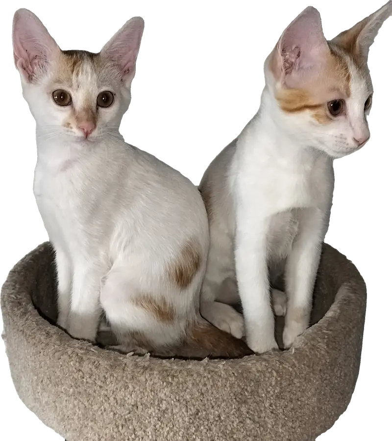

catadoption_pune
catadoption_pune
You might remember getting a deworming tablet at school. In India, children also get them at anganwadis. But what do you give a kitten so small she still drinks her mother's milk? For kittens I've cared for in Pune, my vet recommended a liquid. It comes in a little bottle with a dropper. Getting a kitten to agree to the taste is another matter. India's National Deworming Day
How did she get worms before her first solid meal?
A common feline roundworm can pass from a mother to her kittens through her milk. The young worms grow in the kitten's gut. A heavy infection can slow her growth or even block her intestine. That's why deworming can save a tiny kitten's life. If the kittens are nursing, let them stay with their mum and ask the vet about treating the family together. Cornell Feline Health Center
You might see a round tummy on an otherwise skinny kitten. You might also see a perfectly ordinary-looking kitten and nothing unusual in the litter. Roundworm eggs are microscopic, and a swollen belly has other possible causes. If you found her yesterday and don't know her age, say exactly that. The vet can weigh her and help work out when to start. If she feels cold and floppy, is very weak or won't feed, call a vet straight away. Pune and PCMC emergency contacts
Same name on the box. What's in each one?
These are the two Feli-D products my vet recommended. I earn nothing from either Supertails link.
| Pack | Active ingredients |
|---|---|
| Feli-D Kitten Deworming Suspension, 15 ml bottle | Each 1 ml contains pyrantel pamoate 14.4 mg and febantel 15 mg. |
| Feli-D Deworming Tablets for Cats, pack of four | Each tablet contains pyrantel embonate 230 mg and praziquantel 20 mg. |
Pamoate and embonate are two names for the same salt of pyrantel. So both packs contain pyrantel, but the kitten liquid pairs it with febantel and the tablet pairs it with praziquantel. Ask the vet “Which one suits this kitten, how much do I give, and when is the next dose due?” A tiny kitten needs a dose you can measure accurately. Guessing at a sliver of an adult tablet is an easy way to get it wrong. Keep human deworming tablets for people.
The kitten bottle was about ₹140 when I checked. When shopping, I look for the ingredient names because herbal products also come up in a search for “cat dewormer”. My vet advised me against relying on those for worms.
How do you get a kitten to take the liquid?
Street kittens I've cared for have been willing to eat it in their favourite creamy treat. For a kitten already eating on her own, check that the vet says food is fine with her medicine. Mix the measured dose into one small lick of treat and watch that kitten finish it. A shared saucer leaves you guessing who got how much. If she only eats some, ask the clinic what to do before giving any more. VCA's guide to giving liquid medicine
My own kittens were much less cooperative. If yours needs the dropper, ask the vet to show you the hold and the exact mark to fill to. For an alert kitten who can swallow:
- Settle her upright on your lap with her head level. A towel loosely around her body can help with wriggly paws.
- Slip the tip just inside the corner of her mouth, between cheek and teeth. Let a little liquid drip into that cheek pocket. Squirting it towards the throat or tipping her chin up can send liquid into her airway.
- Pause so she can swallow and breathe before giving a little more. If she struggles hard, coughs or sputters, stop. Call the vet if you think she inhaled any liquid. Difficulty breathing needs emergency care. Cornell's guide to oral medicines
Why the vet rang me at 8 in the morning
I ordered the Feli-D tablets for my grown cats on Supertails one night. At 8 the next morning, their vet rang. Breed? Age? Weight? Only then did they confirm the order. My cats weigh 5.5 kg each. The vet's instructions for my cats and this particular tablet were one and a half tablets each, every three months. For a kitten, I ask for her own next date. She may need a repeat dose much sooner.
If you're fostering, photograph the vet's note and put the next date in your phone. When someone comes to take her home, you can send them both. That's the story behind the word “dewormed” on a Pune adoption post.
